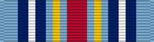

Global War on Terrorism Expeditionary Medal
Service awardGWOT-E
For deployed service abroad in designated GWOT operations, on or after Sept. 11, 2001.
Check your eligibility and build your ribbon rackHow you get it
You earn this by meeting the requirements. No recommendation is needed. If it's missing from your record, current members can have their MPF add it. Veterans can request it from AFPC with a Standard Form 180 and supporting documents.
You qualify if any of these apply
- Deployed abroad to a designated area of eligibility for OEF or OIF and assigned, attached, or mobilized to a participating unit for 30 consecutive or 60 nonconsecutive days
- Regularly assigned aircrew flying sorties into, out of, within, or over the area of eligibility for 30 consecutive or 60 nonconsecutive days (one day per day flown)
- Engaged in actual combat against the enemy under grave danger, regardless of time served
- Killed, wounded, or injured requiring medical evacuation from OEF or OIF
Quick facts
- Category
- Campaign and service
- Type
- Service award
- WAPS points
- 0
- Position in the AFPC listing
- 52 of 91 (listed in order of precedence)
Full AFPC fact sheet text
Background
In March 2003, President Bush approved the Global War on Terrorism Expeditionary Medal for award to Air Force active duty, Reserve and Guard personnel as recognition for their service in the Global War on Terrorism. For eligibility of the GWOT-E, individuals must have deployed abroad, on or after September 11, 2001 and a future date to be determined, for service in Operations Enduring Freedom or Operation Iraqi Freedom, and meet one of the following:
-Assigned, attached, or mobilized to a unit participating in OEF/OIF and serving for 30 consecutive days or 60 nonconsecutive days (there is no time limit required for nonconsecutive days to be accumulated)
-Be engaged in actual combat against the enemy and under circumstances involving grave danger or death or serious bodily injury from enemy action, regardless of time served in OEF/OIF
-Killed, wounded or injured requiring medical evacuation from Operations OEF/OIF
Service members who, as a regularly assigned crew member flying sorties into, out of, within or over the area of eligibility in direct support of OEF or OIF, are eligible to qualify for award of the expeditionary medal. Each day that one or more sorties are flown shall count as one day toward the 30 or 60 day requirement.
Under no conditions will units or personnel within the United States be eligible for the GWOT-E.
Criteria
Refer to Department of Defense 1348.33 Vol 2 and/or the DOD Personnel and Readiness webpage for specific individual eligibility requirements and announced operations.
Individuals must have served in one of the following designated, specific geographic areas (land area, airspace, or waters) of eligibility and supporting Operations ENDURING FREEDOM and/or IRAQI FREEDOM (unless otherwise annotated) to be eligible for the GWOT Expeditionary Medal. Termination date for Operation ODYSSEY LIGHTING is now Jan. 17, 2017 instead of Dec. 19, 2016.
The following initial locations are eligible effective Feb.13, 2004:
Afghanistan (see Note 1)
Bab el Mandeb
Bulgaria (Bourgas)
Crete
Cyprus
Diego Garcia
Djibouti
Egypt
Eritrea
Ethiopia
Gulf of Aqaba
Gulf of Suez
Iran
Iraq (see Note 1)
Israel
Jordan
Kazakhstan
Kenya
Kuwait
Kyrgyzstan
Lebanon
Mediterranean Sea (East of 28 degrees E longitude)
Pakistan
Philippines
Romania (Constanta)
Somalia
Strait of Hormuz
Suez Canal
Syria
Turkey (East of 35 degrees E Longitude)
Turkmenistan
Yemen
The following countries were added effective March 21, 2005:
Algeria
Bosnia-Herzegovina
Chad
Georgia
Hungary
Kosovo (see Note 2)
Mali
Mauritania
Mediterranean Sea ("Boarding and Searching" Vessel Operations)
Niger
Turkey
Uganda
The following countries were added effective July 14, 2005:
Colombia
Guantanamo Bay, Cuba
The following countries were added effective Dec. 1, 2006:
Azerbaijan
Nigeria
Senegal
Sierra Leone
Tanzania
Tunisia
The following countries were added effective Oct. 8, 2008:
Burkina Faso
Northern Iraq (North of 36 degrees N latitude - Operation NOMAD SHADOW / see Note 3)
Morocco
Turkey (Operation NOMAD SHADOW)
The following locations are eligible effective Feb. 13, 2004 – June 1, 2014:
Arabian Sea (North of 10 degree N latitude and west of 68 degree E longitude)
Bahrain (land and airspace)
East Timor
Gulf of Aden
Gulf of Oman
Haiti
Kuwait (land and airspace)
Kyrgyzstan
Liberia
Malaysia (any area not certified within)
Montenegro (land and airspace)
Oman
Persian Gulf
Qatar (land and airspace)
Rwanda
Red Sea
Saudi Arabia (land and airspace)
Serbia (land and airspace)
Tajikistan
United Arab Emirates
Uzbekistan
Note 1: Service members serving in the qualifying AOE for which the Afghanistan Campaign Medal and/or the Iraq Campaign Medal were subsequently authorized are no longer qualified to receive the GWOT-EM after April 30, 2005.
Note 2: Applies only to specified GWOT operations not associated with operations qualifying for the Kosovo Campaign Medal.
Note 3: Service members who qualify for both the ICM and the GWOT-EM for the same Operation NOMAD SHADOW deployment shall be awarded either the ICM or the GWOT-EM, but not both. No service member shall be entitled to more than one campaign or expeditionary medal for the same period of service.
(Listing is current via myPers as of April 9, 2014)
Medal description
The GWOT-E is a Defense Department campaign medal. Award of this medal does not prevent award of other types of recognition (such as decorations) normally associated with deployment. This medal may be awarded posthumously. Since there are no service star devices authorized at this time, members may only wear the medal. Also, there are no promotion points associated with this medal.
Source: Global War on Terrorism Expeditionary Medal fact sheet, Air Force's Personnel Center